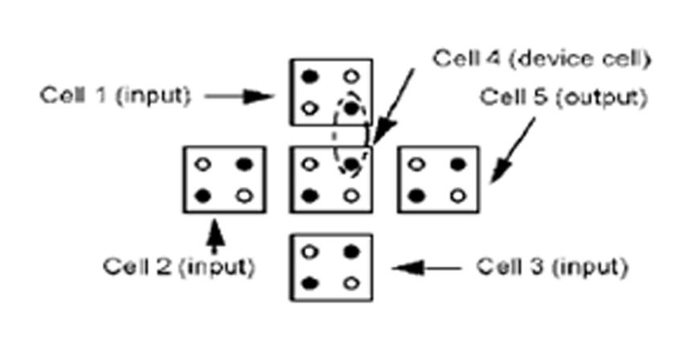

Projects
Sequential circuit design using quantum-dot cellular automate(QCA)
As the size of CMOS transistors keep shrinking, it will eventually hit its limitation. Hence, an alternative device has to be discovered to continually improve theMake tweaks, leave comments, and share development of electronics devices. Quantum-dot cellular automata (QCA), is a potentialwith others to edit at the same time. device that can be used to implement digital circuits. In this project, the basic theory of QCA cell and some fundamental gates of QCA scheme is presented. The fundamental gates, such as the QCA inverter and QCA majority gate are then used to build more complex logic circuits. Several design of sequential circuits are presented in QCA architecture.
QCA Majority Voter
Blob Controlled Robot through webcam using Matlab
The project presents a video structure analysis of a 3-D ball using color based segmentation which uselab color space in each frame,with region matching between frames.It is made to build blob controlled robot which uses camera to take frames and do image processing to track down the object,as robot moves according to the direction of object.The communication between PC and robot is done with the help of wireless communication ZIGBEE.Here I have used MATLAB for computer vision and image processing.